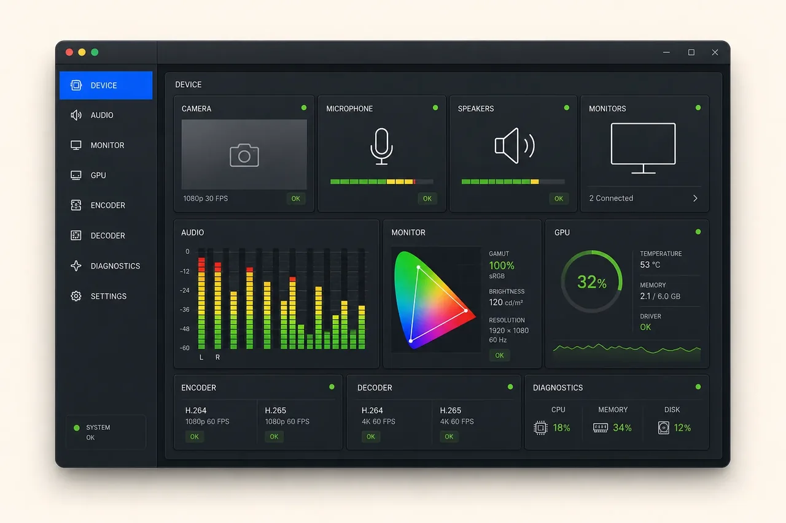

Device Manager
MEDIA CAPABILITY LAB · BUILD 2026
Device Manager
媒体设备体检与开发前能力验证器
C++
Qt 6.11
breflow
AudioDevice
DisplayWindow
HWInfo / Detector
能力验证
PROBE
按设备检测

DIAGNOSTIC ISSUE
Capability is fragmented
摄像头、音频、屏幕、GPU 与编解码能力来自不同系统接口，设备名称并不稳定，权限与热插拔还会持续改变现场状态。仅凭“能否录制”反推设备是否存在，既慢又会产生误判。
RESOLUTION APPLIED
One explicit device model
以稳定 ID 和显式枚举建立统一设备模型，基于 breflow 的 AudioDevice、DisplayWindow、HWInfo / Detector 与各类 factory 获取能力；把检测与测试分开，让每次测试都可取消、有超时，并确保不永久修改系统默认设备。
CAPABILITY MATRIX
6 个验证模块
概览
探测项
设备健康摘要与问题入口
Camera
探测项
稳定 ID、格式与预览测试
Audio
探测项
输入输出设备与实时电平
Monitor
探测项
屏幕、窗口、色彩与显示参数
GPU
探测项
硬件、驱动与可用加速能力
Encoder / Decoder
探测项
能力矩阵与短基准
REPORT / CORE IMPLEMENTATION
Copy-safe summary
- ✓音频、显示器与窗口的统一枚举
- ✓硬件、驱动与默认设备状态汇总
- ✓摄像头预览和麦克风实时电平测试
- ✓屏幕颜色、色域与显示参数检测
- ✓可复制、可脱敏的诊断报告
- ✓热插拔、超时与取消状态完整收口
SAFETY POLICIES
- P1通过系统枚举确认设备，不用真实录制“猜”设备是否存在
- P2所有主动测试均可取消、有明确超时和可理解的失败原因
- P3测试过程不永久修改系统默认设备或用户设置
- P4诊断报告默认保护设备名称、路径和用户隐私
后续演进 · 以下为路线图，具体阶段以项目说明为准。
UPDATE CHANNEL
Capability rollout
先把设备状态说清楚
阶段说明
音频、显示器与窗口枚举 · 硬件信息与稳定 ID · 摄像头预览测试 · 麦克风音频电平测试
从检测升级到能力验收
阶段说明
编解码能力矩阵与短基准 · 设备热插拔时间线 · 隐私脱敏诊断导出 · 屏幕颜色与更多媒体能力测试